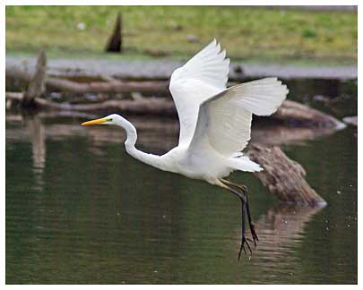

Great White Egret
A rare bird in the UK but becoming more regular with the first UK breeding reported from the Somerset Levels in 2012.
13/08/09 - Single bird arrived late afternoon and stayed until 02/10/09, long enough to be seen by many people (AG)
10/08/12 - 2 birds (DWH) (Also one was reported from nearby Hornsbury Mill area on 01/02/12)
28/11/12 - Single bird
25/09/13 - Single bird
07/10/13 - Single bird (GA)
13/12/13 - Single bird
10/12/15 - Single bird stayed 2 days (DWH)
27/08/16 - Single bird stayed 8 minutes
13/07/17 - Single bird (KGH)
02/12/17 - Single bird (AG)
24/08/18 - Single bird (SH)
02/09/18 - 3 birds seen to arrive at the res (GA)
08/01/19 - 1 flew over at considerable height (DWH)
27/08/19 - Single bird
15/09/19 - Single bird (HCS)
18/11/19 - Single bird (DWH)
05/02/20 - Single bird (Brian Hill)
16/09/20 - 3 birds (DWH) on a crazy day with Little Egret, Cattle Egret, Glossy Ibis and Spoonbill also seen
17/09/20 - 2 birds (DWH)
23/06/21 - 1 bird (SH)
20/09/21 - 1 bird (KGH)
01/09/22 - 2 birds (DWH), still present next morning
10/10/22 - 1 bird (KGH)
07/02/23 - 1 bird (SH)
12/06/23 - 1 bird stayed from 12/06 for the rest of the month and until 01/07 (many observers)
11/09/23 - 1 bird (DWH)
13/09/23 - 1 bird flew low over the dam (DWH)
2024 - 4 records this year with 1 on 15/09 (Gary Andrews), 2 on 25/09 (Malcolm Brown) and 1 on 28/12, 29/12 and 30/12 (Gary Andrews), mostly early morning records
2025 - 39 records of single birds apart from 2 on 12/01. None seen in March, May, October or November (15 records in January!)